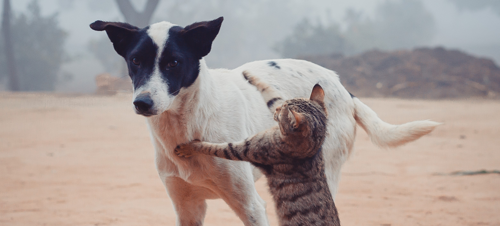
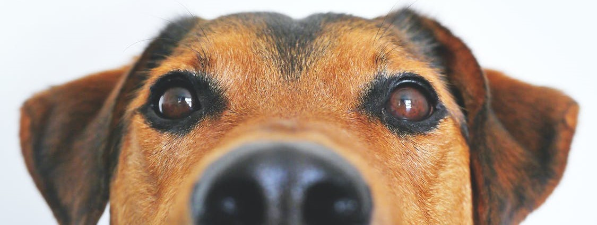
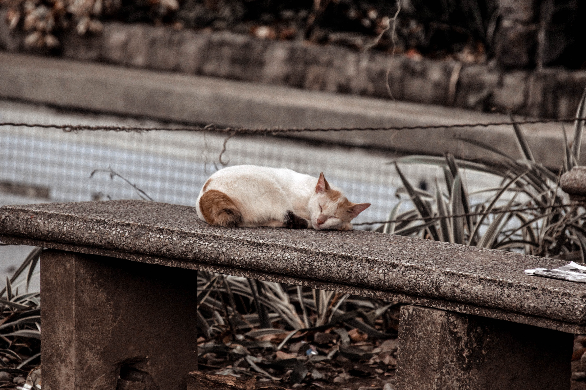
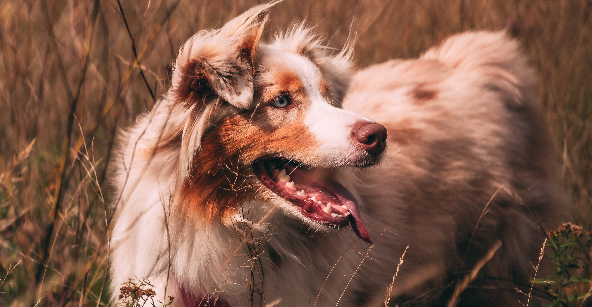
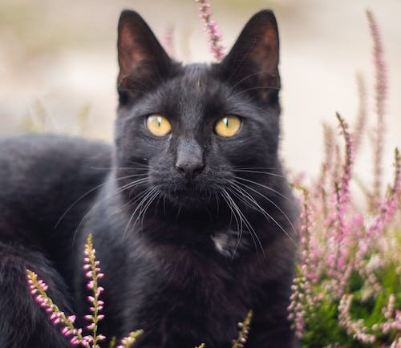
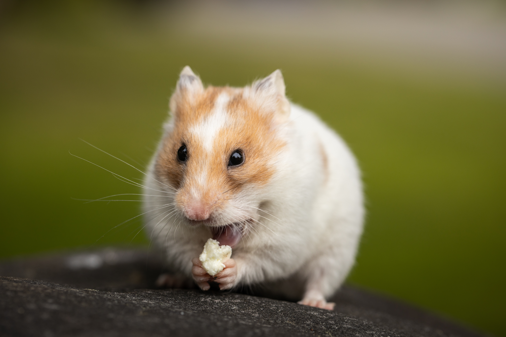

É crime praticar maus-tratos contra animais domésticos, silvestres, nativos ou exóticos, de acordo com a Lei 9.605/98, artigo 32. Existem várias condutas que podem caracterizar os crimes, tais como o abandono, ferir, mutilar, envenenar, manter em locais pequenos sem possibilidade de circulação e sem higiene, não abrigar do sol, chuva ou frio, não alimentar, não dar água, negar assistência veterinária se preciso, dentre outros. Atualmente, a legislação prevê pena de três meses a um ano de detenção para quem pratica os atos contra animais. A pena é aumentada de um sexto a um terço se o crime causa a morte do animal – o que foi mantido no novo projeto.
Apesar da grande aceitação dos animais de estimação e do crescimento do número de pets por lares, o abandono ainda é algo muito presente na sociedade. Entre os principais motivos citados por pessoas que abrem mão de cães e gatos estão gravidez na família, alergias e outras doenças, mudança de residência, filhotes indesejados, velhice do animal e falta de planejamento para a manutenção dos bichinhos de estimação. Por mais que maltratar animais possa parecer algo inimaginável para a maioria dos tutores de pet em todo o país, existem muitas pessoas que agridem os peludos com muita frequência. Por isso, existem leis específicas para proteger os animais domésticos. Para você ter ideia da violência contra animais, em 2020, o número de casos de violência contra animais registrados na delegacia eletrônica de São Paulo chegou a 15.478 – um crescimento de 28% em relação ao ano anterior.
A relação de reciprocidade e afeto entre humanos e animais é algo que se perpetua ao longo dos séculos. A popularidade dos chamados "pets" cresceu muito nos últimos anos, o que deu ao Brasil o segundo lugar no ranking de maiores produtores de insumos do Mercado Pet, perdendo apenas para os Estados Unidos. De acordo com os dados da Associação Brasileira da Indústria de Produtos Para Animais (Abinpet), no primeiro trimestre de 2014 as exportações de tais produtos cresceram 22,9% em relação ao mesmo período de 2013, chegando a uma estimativa de US$ 16,4 bilhões para o ano todo.
Hoje em dia, muitos animais fazem companhia pra nós, e infelizmente muitas pessoas não levam a adoção de animais com a importância que elas deveriam levar, e acabam abandonando os animais, e isso também é considerado um abuso. algumas questões devem ser levadas em consideração antes de fazer a adoção, afinal, essa é uma decisão que não deve ser tomada de forma precipitada.





A Ampara Animal oferece um formato diferente das outras ONGs. Eles não possuem recursos próprios, mas se especializaram em captar recursos e repassá-los para ONGs de animais e protetores em um modelo de rodízio. Assim, a Ampara Animal apoia diferentes organizações.
Site da AmparaO Instituto Luísa Mell foi criado em 2015, pela modelo e apresentadora Luísa Mell. A organização costuma participar de resgates massivos, em especial, de casos em que os animais estão sendo utilizados para reprodução, de forma exacerbada e sem os devidos cuidados.
Site da Luisa MellSAVE é a Associação da Conservação das Aves no Brasil, com o objetivo não só de proteger o meio ambiente, mas também para evitar a extinção de certas espécies de aves que só existem aqui no Brasil.
Site da SAVE